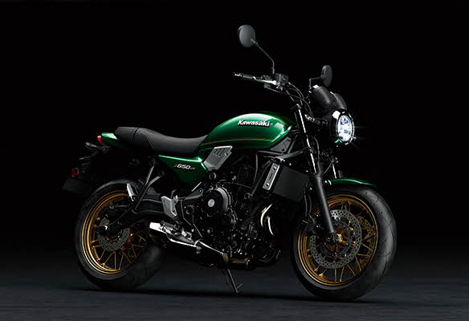

진정한 미들급 레트로 스포츠 네이키드
A TRUE MIDDLEWEIGHT RETRO SPORT NAKED
가와사키의 배기량 649cc 병렬 2기통 엔진이 사용된 650클래스에는 닌자 650과 Z650, VERSYS 650, 그리고 발칸 S처럼 풀 카울링 스포츠, 슈퍼 네이키드, 어드벤처, 크루저 등의 다양한 모델들이 포함되어 있습니다.


가와사키의 배기량 649cc 병렬 2기통 엔진이 사용된 650클래스에는 닌자 650과 Z650, VERSYS 650, 그리고 발칸 S처럼 풀 카울링 스포츠, 슈퍼 네이키드, 어드벤처, 크루저 등의 다양한 모델들이 포함되어 있습니다.
Z650RS의 경량화의 핵심 요소는 바로 혁신적인 트렐리스 프레임입니다. 총 13.5kg에 불과한 프레임 무게는 가볍고 경쾌한 핸들링에 발휘하는데 큰 역할을 합니다. 프레임은 선을 최대한 직선을 구성하고, 굴곡이 필요한 부분은 각도를 최대한 줄여 응력 분산에 적합하도록 설계했습니다.
중저속 영역에 최적화된 엔진 세팅은 빠른 리스폰스와 강력한 성능발휘로 만족스러운 가속력과 성능을 보여줍니다. 미드레인지(3,000~6,000rpm)에서 가장 성능과 느낌이 뛰어나지만 6,000rpm 이후에도 토크곡선이 갑자기 떨어지지 않고 꾸준히 이어나가며 평평하고 단계가 없는 토크 곡선과 부드러운 엔진 반응은 사용자가 모든 영역에서 자신있게 스로틀을 열수 있도록 합니다. 연비 또한 리터당 23.4km로 뛰어나 일상적인 라이딩은 물론 스포티한 주행에도 적합합니다.
상위기종인 Z900RS과 마찬가지로 와이어 스포크 휠처럼 보이도록 제작된 캐스트 휠은 자사의 노하우를 사용하여 설계됐습니다. 그동안 축적된 데이터를 바탕으로 디자인 뿐만 아니라 성능까지 고려한 Z650RS의 캐스트 휠은 가벼운 무게와 스타일리시한 룩으로 레트로 스포츠 장르에 맞는 핸들링과 디자인을 보여줍니다.
넓고 평평한 핸들바와 편안한 포지션은 라이더 자연스럽게 주행할 수 있도록 하여 초심자들도 자신감을 가지고 쉽게 차체를 다룰 수 있도록 합니다. 슈퍼 네이키드 모델인 Z650과 비교해 핸들그립은 50mm가 높고 30mm 더 가깝습니다. 35°의 넓은 조향각으로 시내주행과 저속에서도 조작이 쉽습니다.
레트로와 현대적인 디자인이 조화된 ø130mm LED 헤드 램프는 야간 시야 확보를 위해 백색광을 비춥니다. Z900RS와 비교해 크기는 약간 작고 2개의 챔버(로우빔/하이빔)로 구성되어 있지만, 전체 램프가 켜진 것처럼 보이게 하는 포지션 램프가 마련되어 있으며 두꺼운 크롬 헤드라이트 링으로 하이 퀄리티 레트로 스포츠 디자인을 완성했습니다.
평평하게 뒤로 뻗은 Z650RS의 리어테일 디자인은 상위모델인 Z900RS보다 짧아 좀더 캐쥬얼한 스타일링을 강조합니다. 타원형으로 디자인된 LED 후미등은 1970년대 올드스쿨 Z시리즈를 오마주 했으며, LED가 점이 모인 형태가 아닌 구형모델에 적용된 할로겐 전구처럼 한점으로 빛나 복고풍과 현대적인 스타일링을 모두 연출합니다.
총알 모양의 케이스에 속도계와 타코미터, LCD 스크린으로 구성된 계기반은 레트로 스타일의 외관과 현대적인 기능을 갖추고 있으며 기어 인디게이터, 주행거리, 트립, 연료게이지, 연비, 냉각수 온도, 시계 등 다양한 정보를 표시합니다.
 1,340cc
1,340cc
 170 kW
170 kW
 14.9 km/L
14.9 km/L